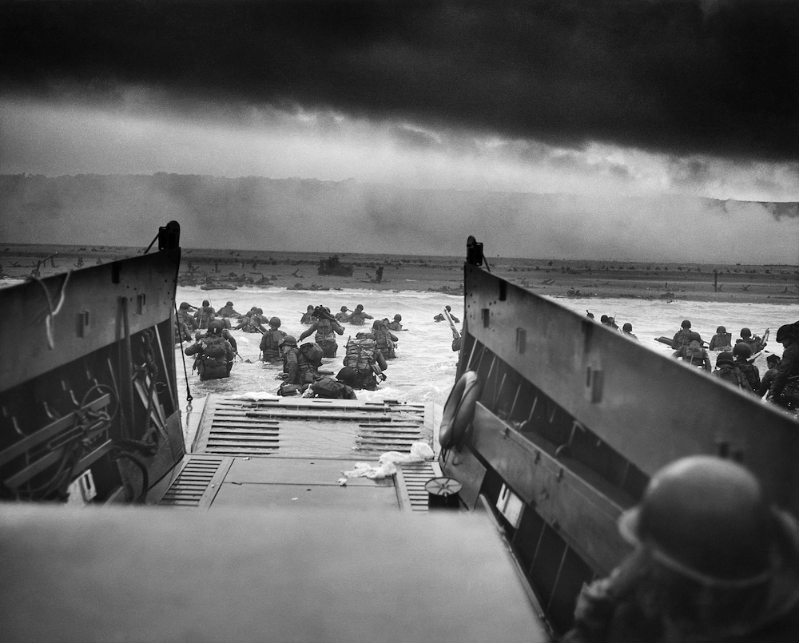

Main Events in 1944
← GO TO MAIN EVENTS
Warsaw Uprising (1/8/1944 - 2/10/1944)
Marszałkowska Street in flames during Warsaw Uprising.
- Germany burnt at least 35% of Warsaw down
- 200,000 citizens died from mass execution
- On August 1, 1944, the Polish Home Army, a non-Communist underground resistance group, launched the Warsaw Uprising to liberate the city from German occupation and reclaim Polish independence. The military action was motivated by the continuing withdrawal of German forces from Poland, followed by the presence of the Soviet Red Army along the east bank of the Vistula River. By October 2, 1944, the Germans had crushed the revolt, deporting civilians to concentration and forced-labour camps and razing Warsaw.
Battle of Normandy (Operation Overlord) (6/6/1944)
 Taxis to Hell – and Back – Into the Jaws of Death, by Robert F. Sargent, CPhoM, USCG.
"American invaders spring from the ramp of a Coast Guard-manned landing barge to wade those last perilous yards to the beach of Normandy. Enemy fire will cut some of them down. Their 'taxi' will pull itself off the sands and dash back to a Coast Guard manned transport for more passengers."
- In World War II, Operation Overlord was the campaign for the invasion of continental Europe in 1944. It was fought by Allied soldiers against German forces. The Normandy landings were crucial in getting the Allied forces onto the European continent. It was successful. The Battle of Normandy lasted until German forces fled over the Seine on August 30, 1944. This marked the conclusion of Operation Overlord.
- The primary Allied forces came from the United States, the United Kingdom, and Canada. Other nations that deployed troops were Australia, Belgium, the Czech Republic, France, Greece, the Netherlands, New Zealand, Norway, and Poland.
← GO TO MAIN EVENTS